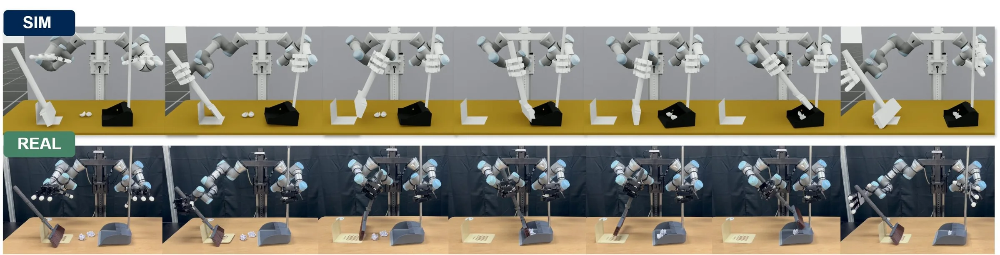
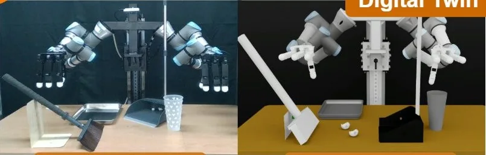
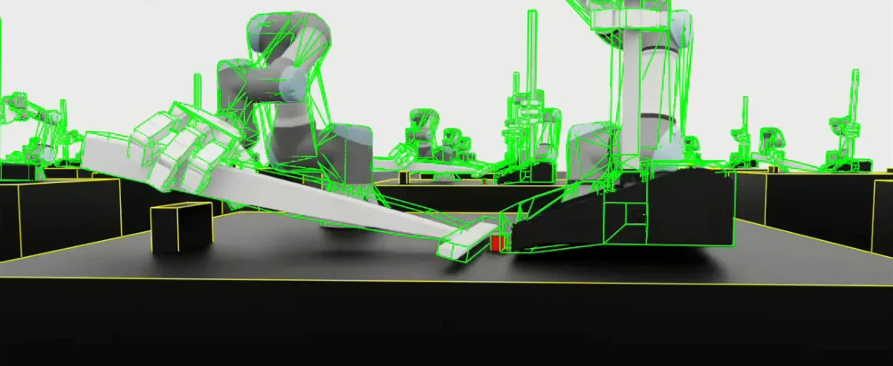
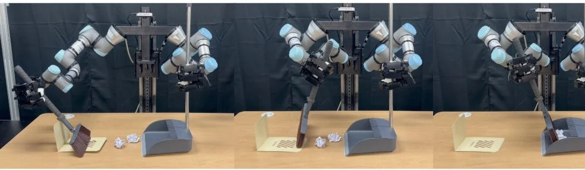
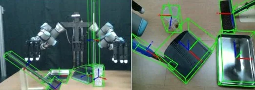
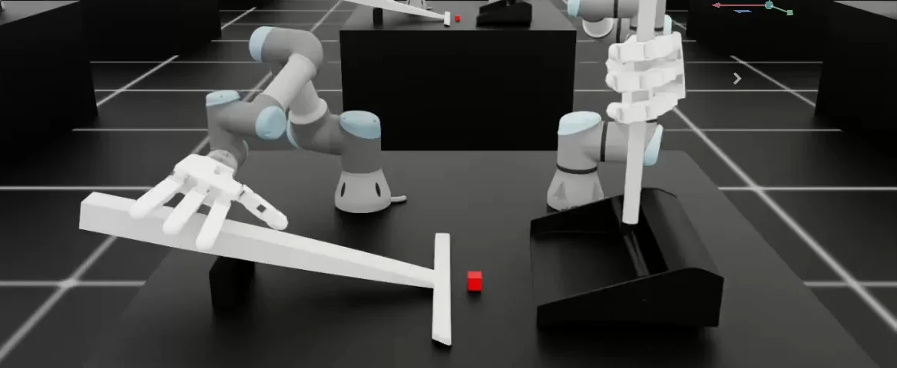

Co-author공동저자/UR 2026 Work-in-Progress/Osaka, July 2026Osaka, 2026.07
Upper-Humanoid Real2Sim2RealAn Upper-Humanoid Real2Sim2Real System for Bimanual Long-Horizon Manipulation
A team system that goes from real demonstrations to a policy on the real robot: a digital twin with real-time object tracking, demonstration augmentation and policy training in simulation, and direct transfer to hardware. I worked on three parts of it.실물 Demonstration에서 실제 로봇 Policy까지 이어지는 팀 시스템: 실시간 물체 추적을 붙인 Digital twin, Simulation에서 Demo 증강과 Policy 학습, 하드웨어로 바로 전이. 그중 세 부분을 맡음

Bimanual Sweeping in simulation (top) and on the real robot (bottom). Figure from the UR 2026 paper.Bimanual Sweeping, Simulation(위)과 실물(아래). UR 2026 논문 그림
01
System시스템

1 Real2Sim
Digital twin and object trackingDigital twin과 물체 추적
A kinematic digital twin with real-time 6D object tracking, so simulation matches the physical setup.실시간 6D 물체 추적을 붙인 Kinematic digital twin으로 Simulation을 실제 구성에 맞춤

2 Sim training
Demo augmentation and policy trainingDemo 증강과 Policy 학습
Human seed demonstrations stitched by subtask, then a TC-TRL policy trained with RL.사람 시연을 subtask 단위로 이어 늘리고, TC-TRL Policy를 RL로 학습

3 Sim2Real
Policy on the real robot실제 로봇 Policy
The learned policy transferred directly to hardware.학습한 Policy를 하드웨어로 바로 전이
02
My three parts내 담당 세 부분

01
Perception
FoundationPose needs a target region marked on the first frame before it can track. I trained a YOLO detector for the target objects so 6D tracking starts from its detections, with no one in the loop. The team used this as policy input in the real-robot experiments.FoundationPose는 첫 프레임에 대상 영역을 지정해야 추적을 시작. 대상 물체 검출용 YOLO를 직접 학습해 검출 결과로 추적이 자동 시작되게 함. 팀의 실제 로봇 실험에서 Policy 입력으로 사용

02
Sweeping assetsSweeping asset
Broom modeled in CAD and set up as a USD asset, with the bristles approximated as one rigid body. Details on the simulation assets page.빗자루를 CAD로 모델링해 USD asset으로 구성, 솔은 하나의 Rigid body로 근사. 자세한 내용은 Simulation asset 페이지

03
Sweeping taskSweeping task
A bimanual sweeping task with stage-wise rewards and penalties, and policy training on it.양팔 쓸기 작업, 단계별 Reward와 Penalty 설계, Policy 학습
03
Results결과
Team result, real robot팀 결과, 실물 success rate (%)
Bimanual Sweeping
85.7%vs 20.0% with BC onlyBC only 20.0%Cup Handover
82.8%vs 37.1% with BC onlyBC only 37.1%- BC only
- Real2Sim2Real systemReal2Sim2Real 시스템
04
Problem solving: starting tracking on its own문제 해결: 추적 자동 시작
Symptom현상
FoundationPose starts tracking only after someone marks the target region on the first frame.FoundationPose는 첫 프레임에 대상 영역을 지정해야 추적을 시작
Analysis분석
For the policy to get object poses at every step, tracking had to start without a person.Policy가 매 순간 물체 자세를 받으려면 사람 개입 없이 추적이 시작돼야 함
Fix조치
Trained a YOLO detector for the target objects and started tracking from its detections.대상 물체 검출용 YOLO를 직접 학습해 검출 결과로 추적 시작
Result결과
Tracking starts as soon as the object is in view, and the team used it as policy input on the real robot.물체가 카메라에 잡히면 자동 추적, 팀의 실제 로봇 실험에서 Policy 입력으로 사용
05
Figures그림
Click to enlarge눌러서 크게 보기
The system with my three parts marked시스템과 내 담당 세 부분
Click to enlarge눌러서 크게 보기
Cup Handover and Bimanual Sweeping, simulation and real. Figure from the UR 2026 paper.Cup Handover와 Bimanual Sweeping, Simulation과 실물. UR 2026 논문 그림